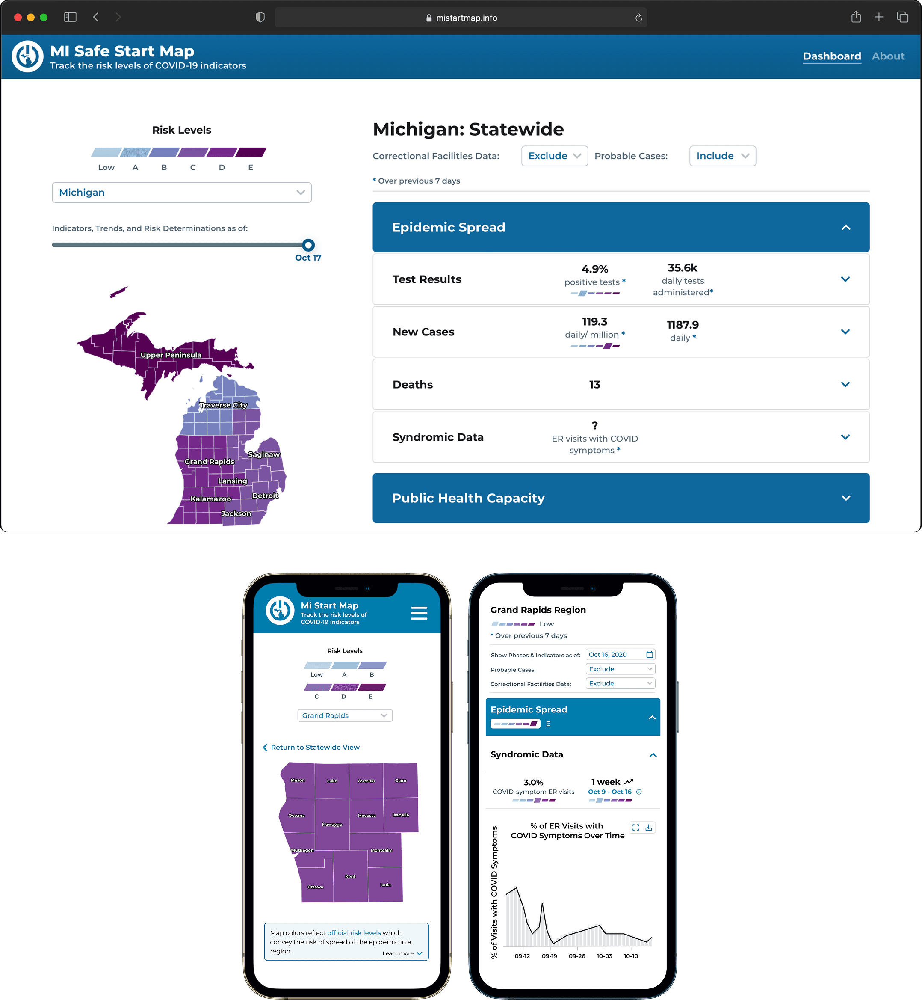
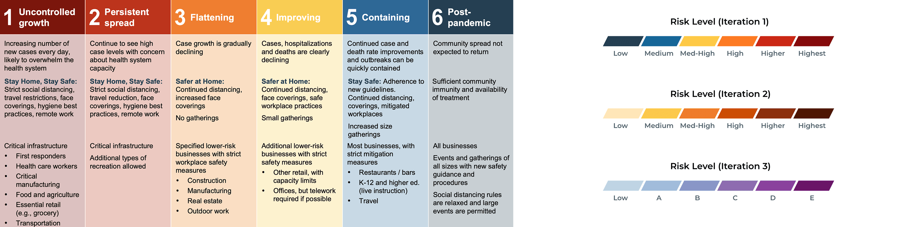
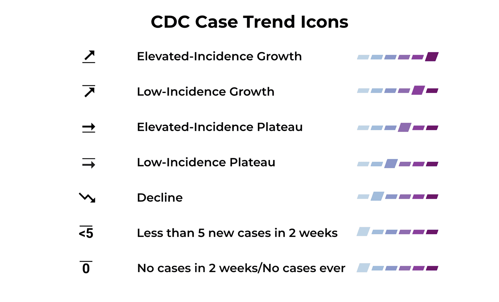

A public-health dashboard that served state officials and 200K monthly visitors from May 2020 through April 2024 — translating CDC case definitions into a seven-icon system that anyone could read at a glance.

Two constituencies with conflicting needs converged on the same dashboard. State officials needed a secure, data-dense view to make rapid reopening decisions. The general public needed transparent, legible access to what was happening with the pandemic in their county.
Interviews surfaced the need for granular data at regional and county levels and downloadable datasets to support analysis and decision-making.
Public-facing research revealed concerns about data integrity and transparency, and worry around hospital capacity and availability. People didn't just want numbers — they wanted to trust them.

Moved from the Governor's official reopening-phase colors to a calmer palette — reducing the chart's emotional intensity while preserving the information.
Simplified complex CDC case definitions into seven distinguishable icons with matching color scales — one glance, one state.

Live from May 2020 through April 2024. Over 200K monthly unique visitors at peak. Covered in a Governor Whitmer press release and on Fox2 Detroit.